What do population ecologists study?
Population dynamics — how population size/density changes over time in a single habitat
Distributions — how populations are distributed over space
Landscape-level dynamics — how populations are maintained at the landscape level (metapopulation)
Population dynamics
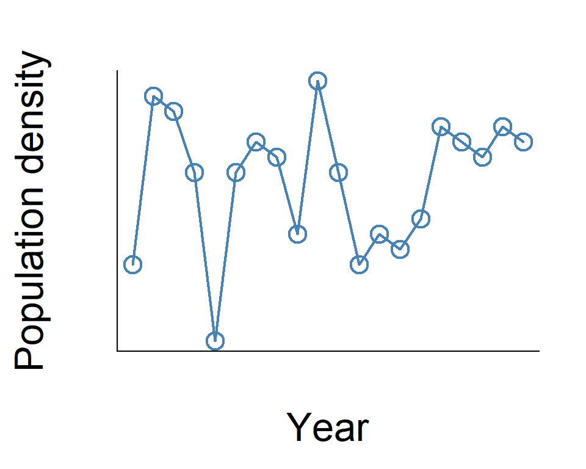
birth & death
(immigration, emigration)
Spatial distribution
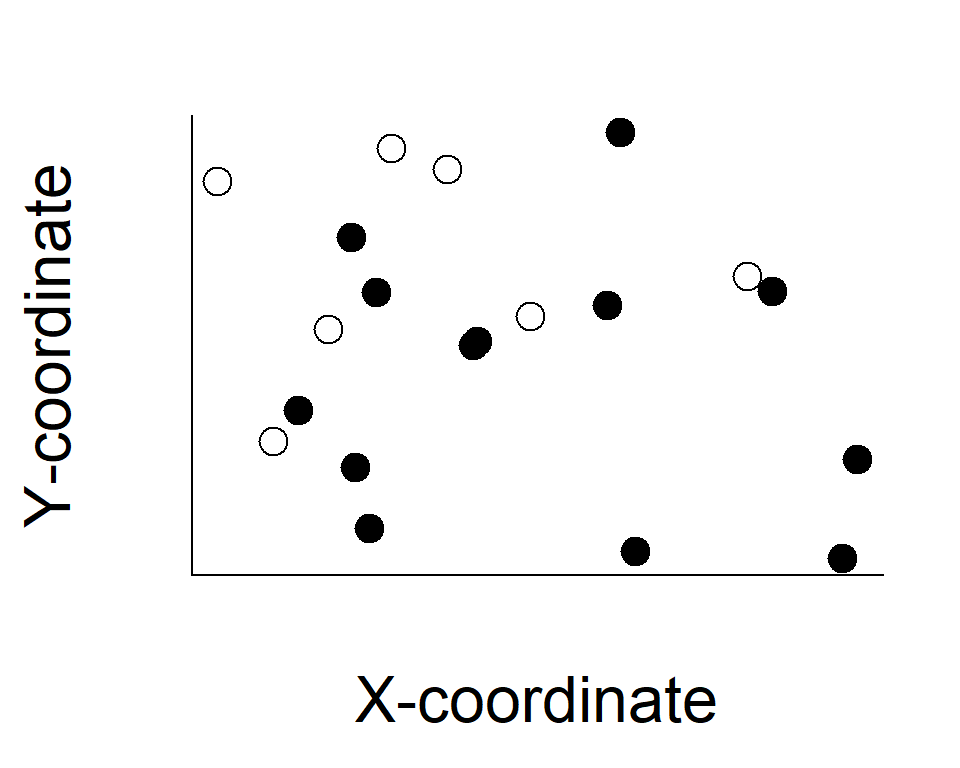
local environments, dispersal
Population of populations
Local population dynamics with no dispersal is driven by birth \(b\) and death \(d\) processes
\[ \frac{dN}{dt} = (b - d)N \]
Once the population goes extinct, no chance to re-establish a new population
Immigration can lead to a colonization into a new habitat
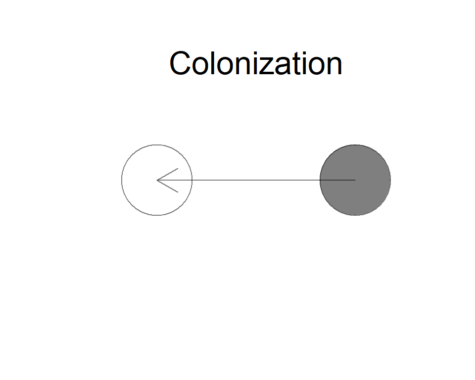
Classical metapopulation theory focuses on dynamics at a landscape level
occupied or unoccupied*Parameter notations may differ among studies
The Levins Metapopulation Model:
\[ \frac{dp}{dt} = mp(1-p) - ep \]
Levins (1969) Some demographic and genetic consequences of environmental heterogeneity for biological control. Bulletin of the Entomological Society of America. 15: 237-240
The Levins Metapopulation Model:
\[ \frac{dp}{dt} = mp(1-p) - ep \]
The term \(mp(1-p)\) determines the rate of increase in occupancy
The Levins Metapopulation Model:
\[ \frac{dp}{dt} = mp(1-p) - ep \]
The term \(ep\) determines the rate of decrease in occupancy
Draw how colonization rate changes over \(p\)
Create \(p\) and \(m\) (set 1.0 for an example)
Draw how colonization rate changes over \(p\)
Plot the relationship b/w \(p\) and \(mp(1-p)\)
Draw how colonization rate changes over \(p\)
Plot the relationship b/w \(p\) and \(mp(1-p)\)
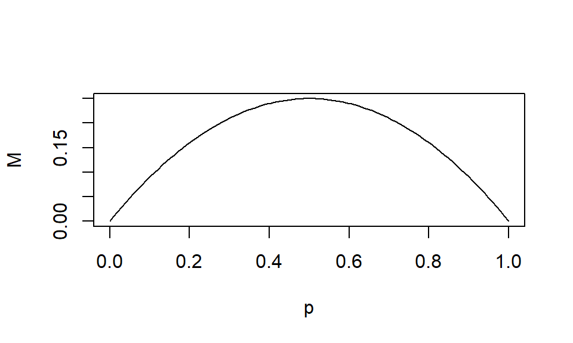
Draw how extinction rate changes over \(p\)
Create \(e\) (set 0.2 for an example)
Draw how extinction rate changes over \(p\)
Plot the relationship b/w \(p\) and \(ep\)
Draw how extinction rate changes over \(p\)
Plot the relationship b/w \(p\) and \(ep\)
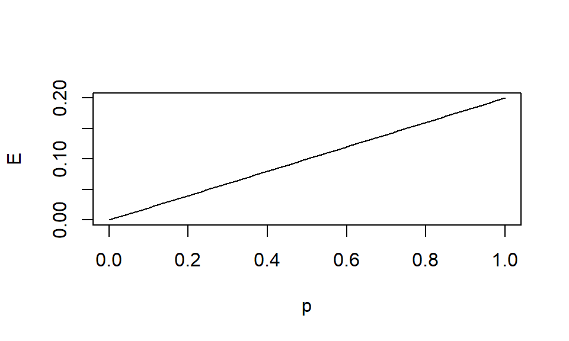
Draw how colonization & extinction rates change over \(p\)
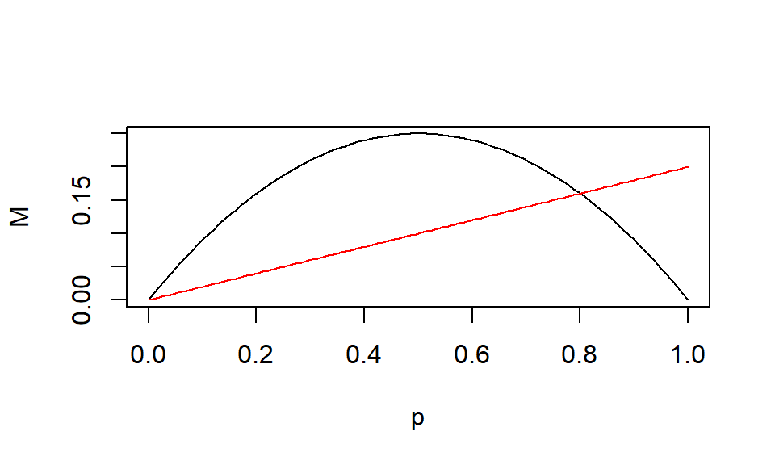
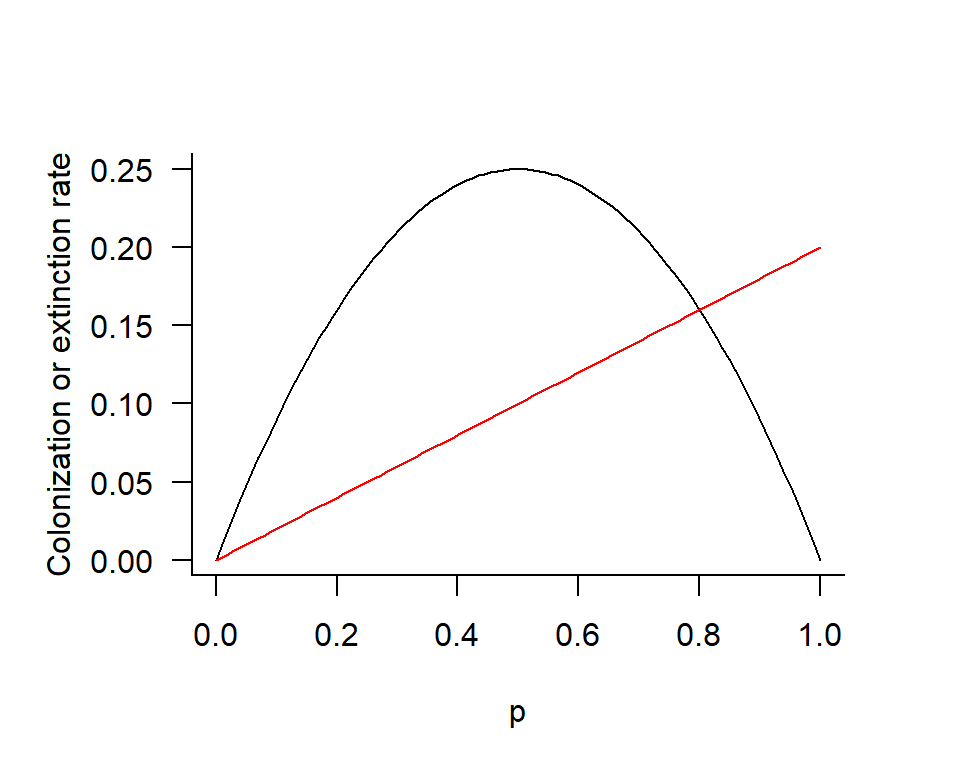
\[ \frac{dp}{dt} = mp(1-p) - ep \]
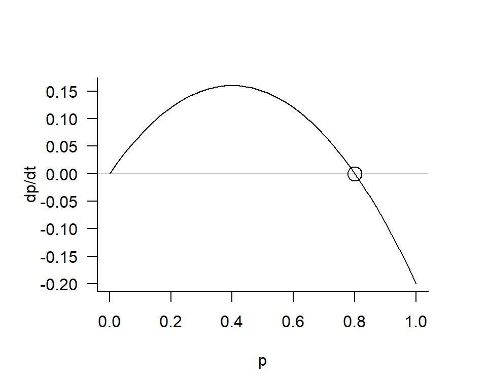
How to get equilibrium occupancy?
Solve the following eq. about \(p\)
\[ \begin{align} \frac{dp}{dt} &= cp(1-p) - ep = 0\\ p^* &= ...\\ \end{align} \]
Solve the following eq. about \(p\)
\[ p^* = 1 - \frac{e}{m} \]
For a metapopulation to persist, \(p^*\) > 0
\[ p^* = 1 - \frac{e}{m} > 0 \]
For a metapopulation to persist, \(p^*\) must exceed zero, meaning
\[ m > e \]
Colonization rate \(m\) must exceed extinction rate \(e\)
The Levins Metapopulation Model:
\[ \frac{dp}{dt} = mp(1-p) - ep \]
can be transformed to:
\[ \frac{dp}{dt} = (m-e)p(1-\frac{p}{1-\frac{e}{m}}) \]
Express differently
\[ \frac{dp}{dt} = (m-e)p(1-\frac{p}{1-\frac{e}{m}}) \]
Let (1) \(p = N\), (2) \(m-e = r\), and (3) \(1-\frac{e}{m} = K\)
\[ \frac{dN}{dt} = rN(1-\frac{N}{K}) \]
Thus, the Levins metapopulation model can be seen as a logistic model at a different spatial scale
NOTE: not identical as \(0 \le p \le 1\)
Classical metapopulation assumes
One of the assumptions in the Levins metapopulation model is equal population size
The mainland-island metapopulation model is on the other extreme
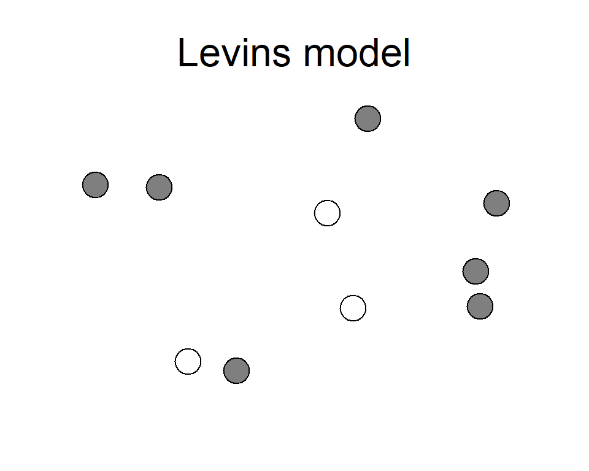
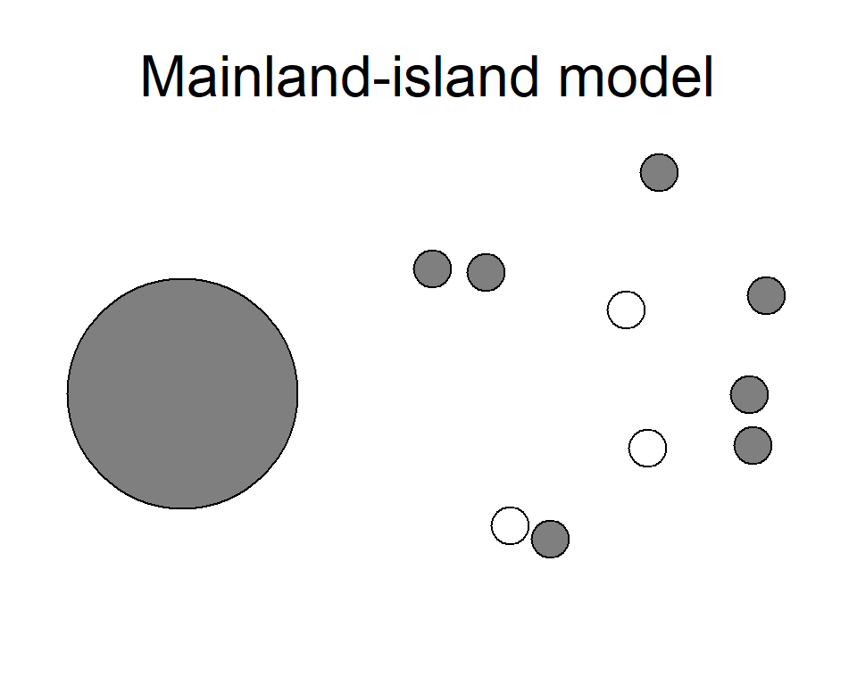
The mainland-island metapopulation model:
\[ \frac{dp}{dt} = m(1-p) - ep \]
The Levins metapopulation model:
\[ \frac{dp}{dt} = mp(1-p) - ep \]
Draw how colonization/extinction rate changes over \(p\)
Create \(p\), \(m\) and \(e\)
Draw how colonization/extinction rate changes over \(p\)
Create \(m(1-p)\) and \(ep\)
Plot \(m(1-p)\) and \(ep\)
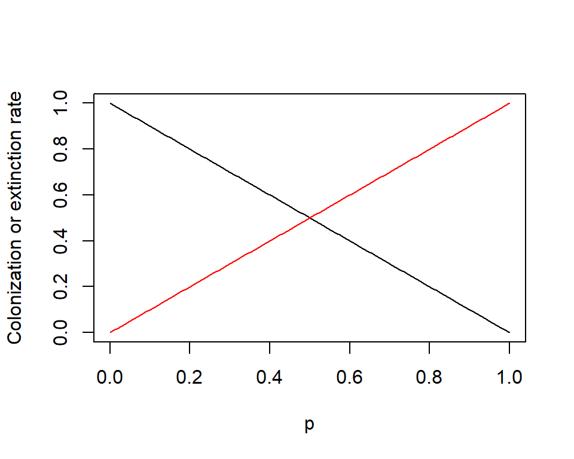
The mainland-island metapopulation model:
\[ \frac{dp}{dt} = m(1-p) - ep \]
The equilibrium occupancy \(p^*\) is
\[ p^* = ... \]
\[ p^* = \frac{m}{m+e} \]
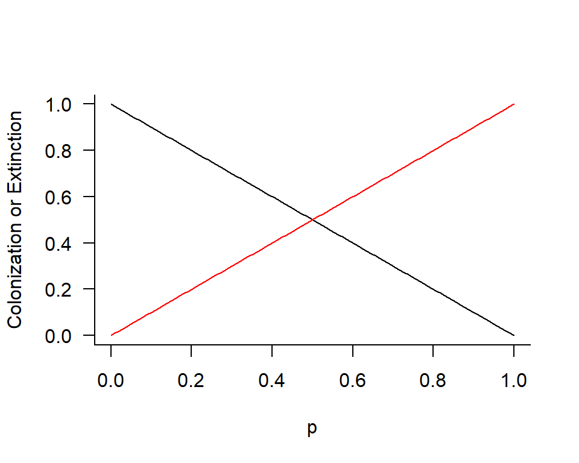
For a metapopulation to persist, \(p^* > 0\)
\(\frac{m}{m+e} > 0\), i.e., \(m > 0\)
When \(m > 0\), there is a persistent supply of immigrants from the mainland
The metapopulation models are clearly oversimplified
In particular…
Random extinction
Population size varies in nature and influences local extinction risk
Random colonization
Organisms have limited dispersal capability
Focus on a single habitat patch and think colonization into and extinction of the patch
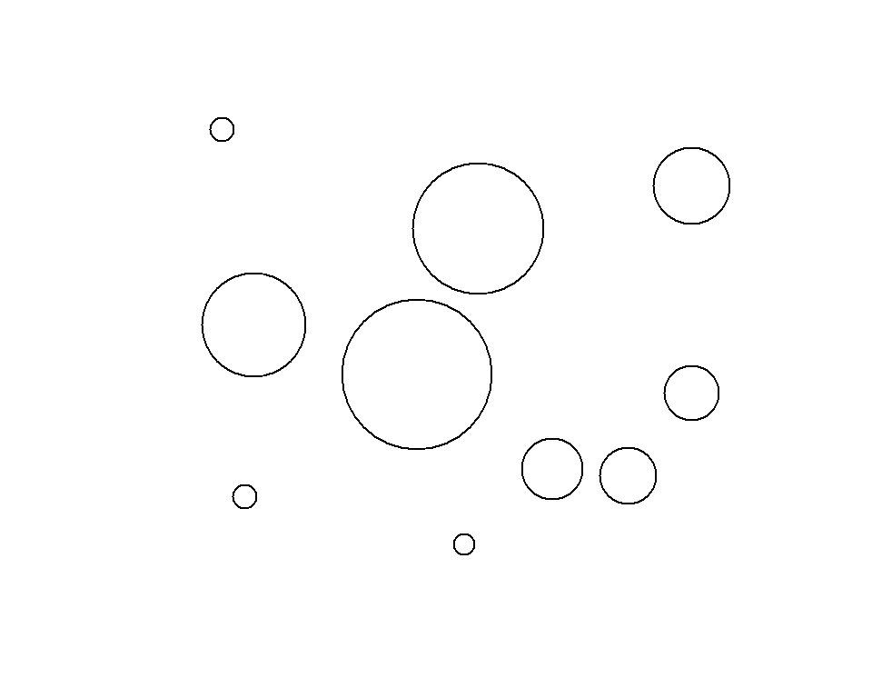
Habitat size
Extinction probability decreases with increasing habitat size
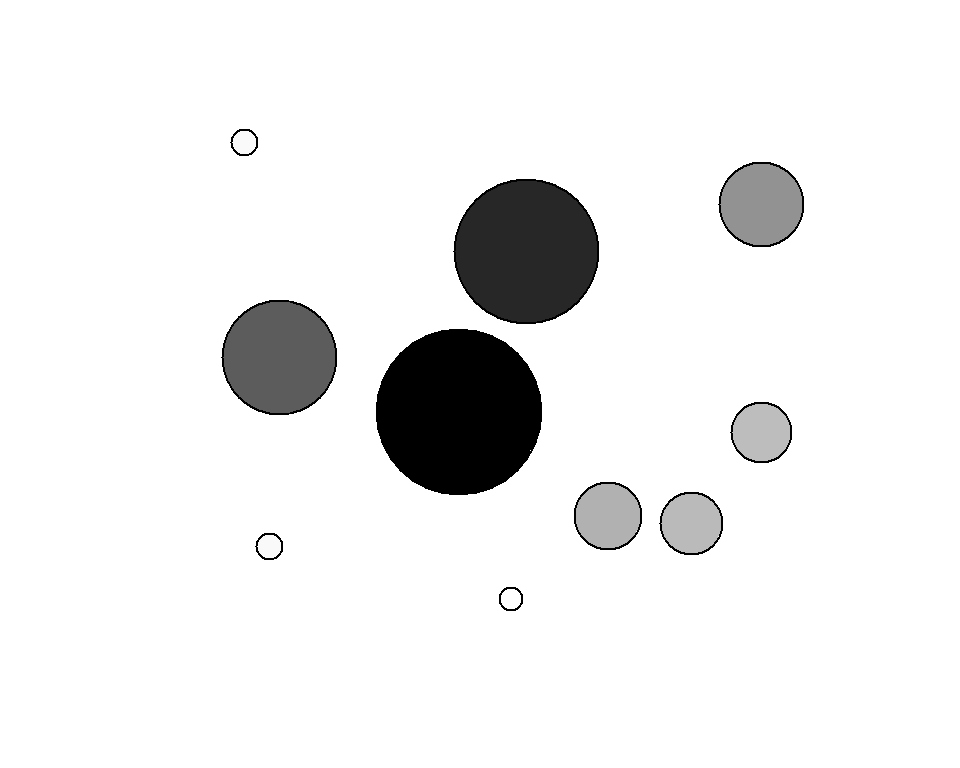
In a large habitat…
Isolation
Colonization probability decreases with increasing isolation
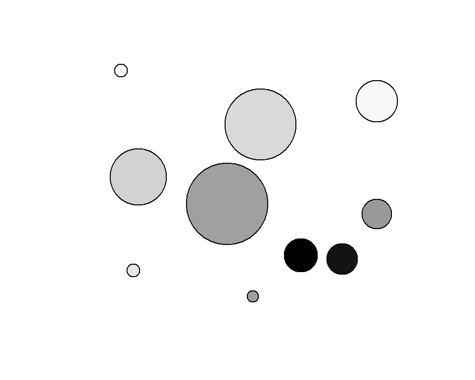
In a isolated habitat,
Measures of isolation
When studying real organisms…
\[ y_i = f(habitat~size, isolation) \]
More reality might be needed for empirical studies
Theory: metapopulation-level occupancy
Empirical: patch-level occupancy
Patch-level studies can still provide insights
However, our primary interest is the metapopulation persistence, not persistence of local populations
Metapopulation replicates are needed to study the drivers of metapopulation persistence
or
Scaling up with simulation approaches with parameters estimated with patch-level studies